The desktop port of RadioAndroid. Same C# codebase, same LibVLC engine — rebuilt for a window you can resize, a system tray and a keyboard.
LibVLC 3.0.23 plays ICY, MP3, AAC, Ogg and HLS. No second engine to choose, nothing to configure — paste a URL and it plays.
Narrow like a phone, half a screen, a quarter, or the whole monitor. The player switches to two columns when there is room; the station grid adds columns as you widen it.
ICY titles are read from the stream, and the cover comes from iTunes, Deezer or AudioAddict. Station logos are cached on disk so the grid stays fast.
60 Hz to 16 kHz, with presets you can save and load. The same EQ files as the phone version.
Seven backgrounds plus your own custom colours, five VU meter styles, and Light / Dark / Auto for the bars — Auto takes its colours from the skin.
Closing the window keeps the radio playing. Left click brings it back, right click gives you play/pause, previous, next and exit.
Ctrl+P plays, Ctrl+←/→ change station, Ctrl+1/2/3 switch tabs, F1 opens help. The keyboard's media keys work even when the window is in the background, through the Windows media session.
The wheel over the volume bar changes volume, a double click on the cover plays or stops, drag and drop reorders stations, and the fourth mouse button goes back — as in a browser.
Playlists, EQ presets and skins live in Documents\RadioAndroid in the same formats as on the phone — copy them across and they just work. Uninstalling never touches them.
A stream that dies is reconnected; one that goes silent without an error is detected by watching the audio buffers, not just the player state.
Set it from the moon in the bar and the countdown replaces the icon. Stopping playback yourself clears the timer.
Self-contained: .NET, the Windows App SDK and LibVLC are all in the package. No runtime to install first, no store account, no background updater.
The same app at phone width, at half a screen, at a quarter and maximised. Nothing is cut off and nothing is stretched — the layout reflows.
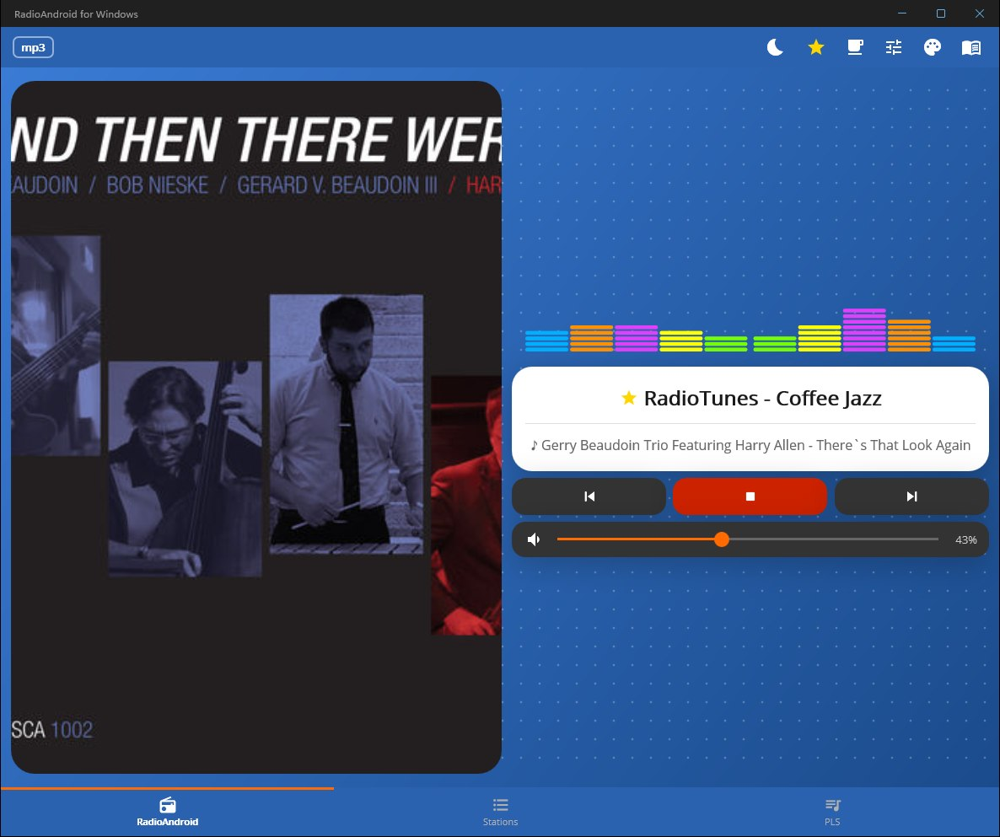
Wide window — the player splits into two columns
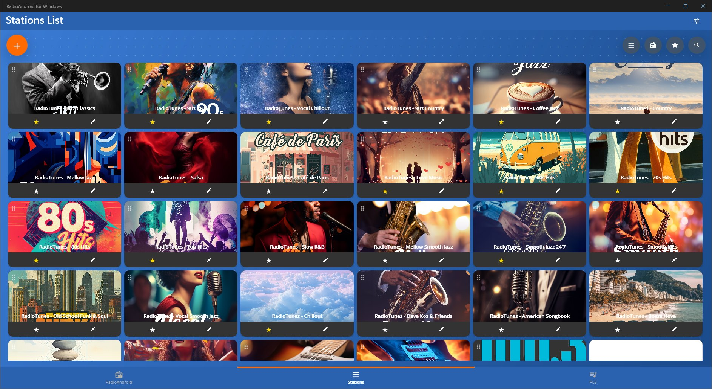
Maximised — the station grid adds columns
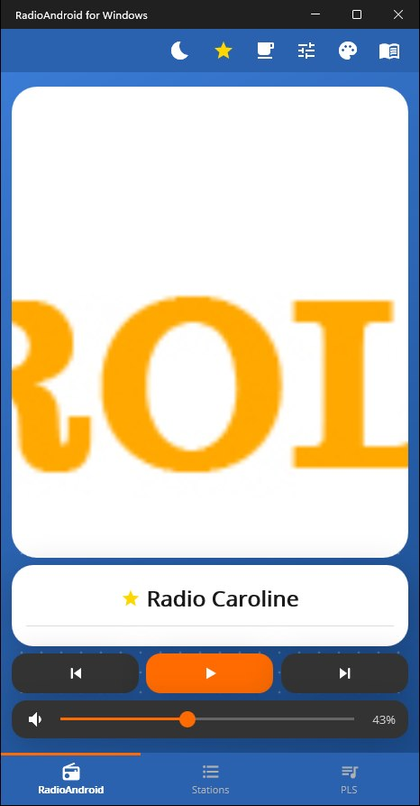
Phone width (480 px)
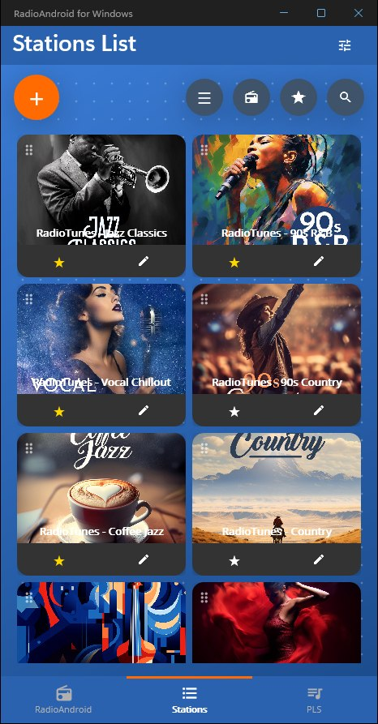
Phone width — station list
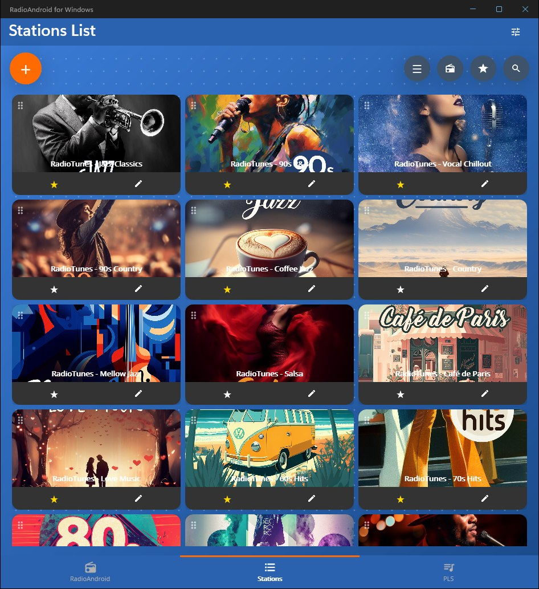
Half screen
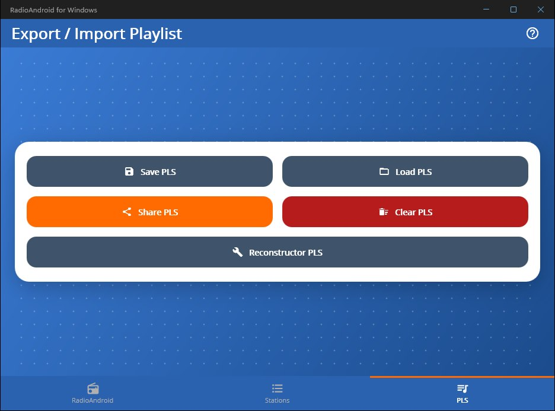
Quarter screen — playlists
Seven skins and five VU meter styles, all shown here on live RadioTunes streams — the cover art and the track title come from the stream itself.
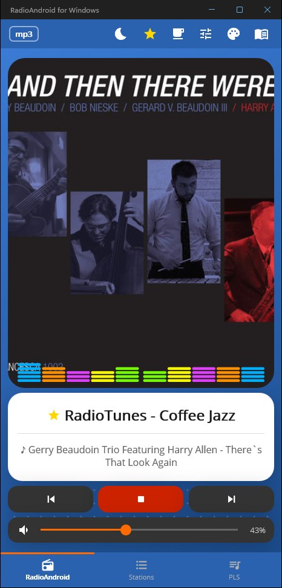
Ocean skin · bar VU
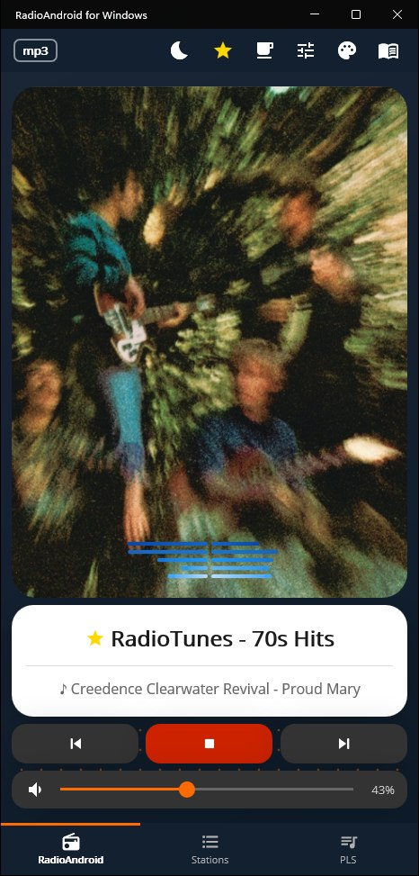
Night skin · line VU
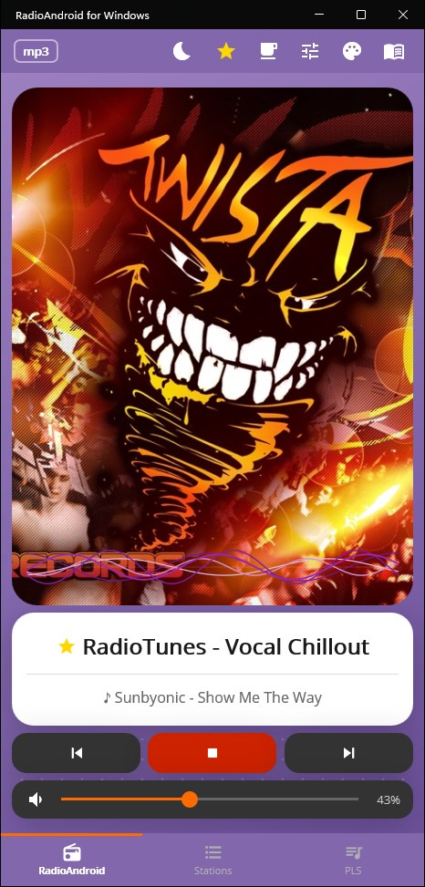
Purple skin · wave VU
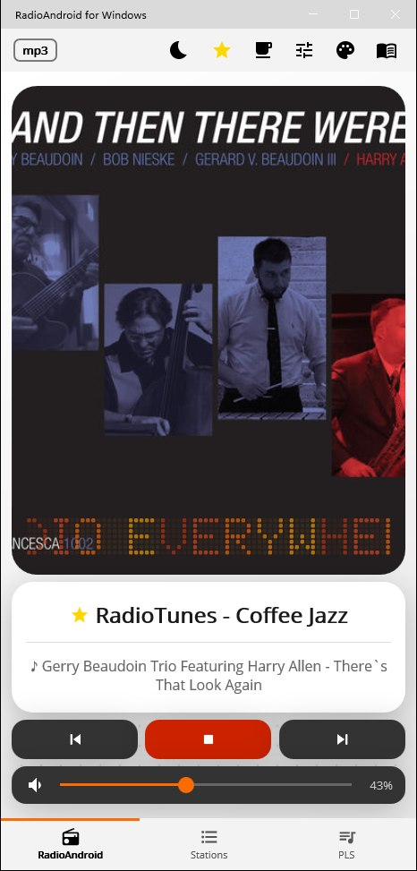
White skin · text VU · light bars
Everything has a button — nothing is hidden behind a gesture you have to guess.
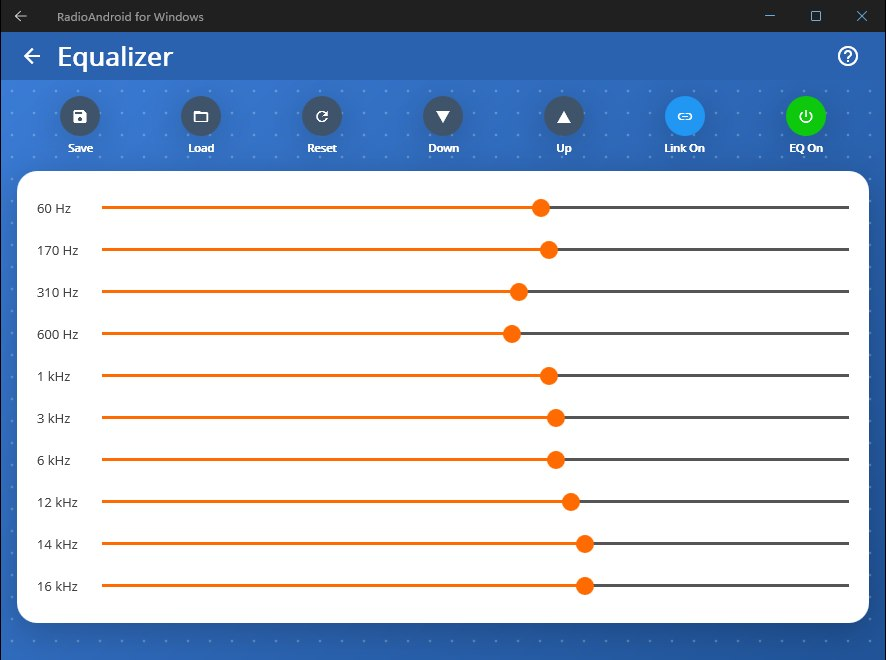
10-band equalizer with presets
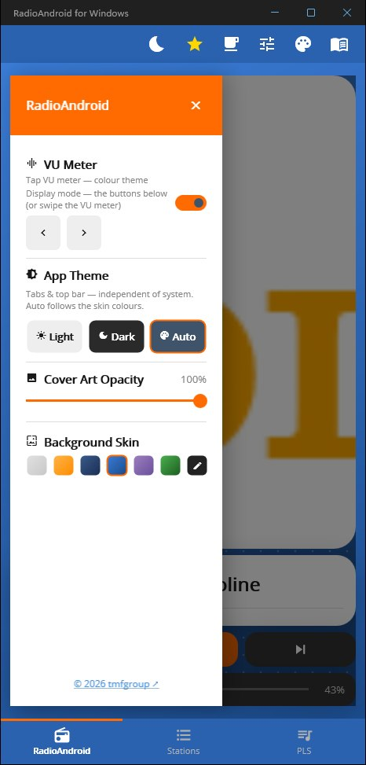
Skins, theme and VU settings in one panel
8E3442BAE30ADF8BAE58D0C77F9DC004B18404FA57FA20CE31C9852A699CBE65Get-FileHash RadioAndroid-for-Windows-Setup.zip — the result must match
character for character. The same hash is in the release notes on GitHub.
A code-signing certificate costs money every year, and this app is free and earns nothing. So Windows treats the installer as coming from an unknown publisher. That says who paid for a certificate, not what is in the file — the SHA-256 above is what proves the file is the one published here.
Windows 11 with Smart App Control on blocks unsigned programs with no "Run anyway". Switch it off in Windows Security → App & browser control → Smart App Control settings, install, and switch it back on if you like (possible without reinstalling since the April 2026 update of 25H2).
Licence: EULA ·
Privacy policy ·
Third-party licences
Found a problem? Report it on GitHub.
Half of the Android app is about the car and the phone — Android Auto, the Bluetooth media session, switching from Wi-Fi to mobile data. None of that has a meaning on a desktop, so none of it was ported. What is left is the radio itself, plus the things a desktop expects and a phone does not have.
| Feature | Android | Windows |
|---|---|---|
| Internet radio, ICY metadata, cover art | yes | yes |
| 10-band equalizer with presets | yes | yes |
| Skins, VU meters, sleep timer | yes | yes |
| PLS / JSON playlists (same file format) | yes | yes |
| HLS (.m3u8) streams | ExoPlayer | LibVLC |
| Keeps playing in the background | foreground service | system tray |
| Keyboard shortcuts & media keys | — | yes |
| Resizable window, two-column player | — | yes |
| Android Auto | certified | not applicable |
| Bluetooth media session (AVRCP) | yes | — |
| Wi-Fi → mobile data fallback | yes | not applicable |
| Chromecast / TV | yes | — |
The namespaces, the view models and the service layer are the Android ones, unchanged — the port was done by subtraction, not by rewriting.
The same engine as the phone app uses for everything except HLS. On Windows it handles HLS too, so there is only one engine to reason about.
LibVLC and LibVLCSharp under LGPL-2.1, .NET MAUI and the Community Toolkit under MIT, Material Icons under Apache-2.0. The full licence texts ship with the app.
If RadioAndroid plays in your room the way it plays in the car, consider buying the developer a coffee.